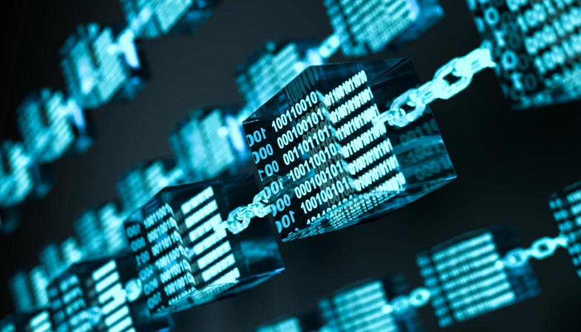

Naam: Jan-Willem Arendsen, Datum: 27-10-2020
Aan de hand van het bericht van Mirja Vink op het forum heb ik beide filmpjes gekeken. Dit onderwerp leek mij altijd al interessant, maar heb hier nooit verder naar gezocht. Door deze filmpjes op het forum, heb ik de stap gemaakt om de filmpjes te bekijken en mij meer te verdiepen wat een Blockchain inhoudt. Vervolgens heb ik meer informatie over dit onderwerp proberen te vinden, om er meer over te weten, omdat ik hier altijd al nieuwsgierig naar was, maar nooit precies snapte wat een Blockchain precies is. Dit artikel is geschreven voor de mensen die nog niet weten wat een Blockchain is en benieuwd zijn naar wat dit is, maar de bronnen in dit artikel zijn tevens interessant voor specialisten die dieper in de informatie willen gaan. In de onderste alinea van de introductie staat kort samengevat waar elke bron over gaat. Mijn advies is om eerst het filmpje van de NOS te bekijken, voordat het onderstaande artikel “Wat is een Blockchain” gelezen wordt.
Vervolgens ben ik, na het kijken van beide filmpjes, meer informatie gaan zoeken op het internet. Hierbij kwam ik op Google Scholar uit op een artikelen van het blad Computerrecht. Dit tijdschrift geeft informatie over informatietechnologie en recht. Dit artikel gaat over Blockchain en op hoofdlijn over de juridische aspecten van toepassingen van Blockchain. Dit artikel gaat er, als er geen voorkennis is, gelijk vrij diep over Blockchain is. Vervolgens ben ik op Youtube verder gaan zoeken naar interessante filmpjes over Blockchain. Hierbij kwam ik op het filmpje van ColdFusion genaamd: “Why Blockchain Matters More Than You Think!”.
Het filmpje “Wat is de Blockchain?” Van NOS op 3 vertelt in een kleine drie minuten met een simpel voorbeeld wat Blockchain is. Dit is goed te volgen en duidelijk te begrijpen (NOS op 3, 2017).
de tekst ‘’Wat is Blockchain’’ wordt de basisinformatie van Blockchain gegeven. Mijn advies is om zeker het filmpje van NOS op 3 te bekijken, wanneer je nog geen idee hebt wat Blockchain is. Bent u meer geïnteresseerd in Blockchain, na het bekijken van het filmpje van NOS op 3 en het artikel ‘’Wat is Blockchain’’, dan adviseer ik u om alle onderstaande bronnen te bekijken.
>Bij het filmpje van Tedtalk genaamd:” How the blockchain will radically transform the economy” wordt er in een klein kwartiertje dieper ingegaan op Blockchain en hoe Blockchain de ruilhandel wereldwijd zou kunnen veranderen. Hierbij wordt de noodzaak voor de gecentraliseerde instellingen, zoals banken en regeringen, zal elimineren om handel te makkelijker et maken (Tedtalk, 2016).
Artikel “Juridische aspecten van (toepassingen van) blockchain’’ legt in het Nederlands de basis van Blockchain uit. Hierbij wordt er dieper ingegaan hoe berichten verstuurd worden via een Blockchain. In hoofdstuk drie van dit artikel worden toepassingen van blockchain uitgelegd, waarin het onder andere gaat over Smart Contract (Linnemann, 2016).
Het derde filmpje vertelt in een kwartier waarom Blockchain belangrijker is dan gedacht wordt. Hierbij is er een checklist genaamd FITS: Fraude, intermediairs, Throughput (aantal transacties) en Stable Data (stabiele data). Met deze checklist kan bepaald worden hoe aantrekkelijk het is om de blockchaintechnologie toe te passen. Dit filmpje gaat diep in op de informatie van Blockchain, onder andere hoe Blockchain in de toekomst te werk kan gaan, om producten en/of diensten te kopen (Altraide, 2017).
Een Blockchain kan als een open infrastructuur gezien worden die veel vormen van activa opslaat. (Tedtalk, 2016). Blockchain is de technologie die gebruikt wordt bij onder andere Bitcoin. De bedenker van Bitcoin wou online betalingen toestaan, die direct verstuurd wordt van de ene groep naar de andere, zonder tussenkomst van een financiële instelling (Linnemann, 2016). Een Blockchain is een gedecentraliseerd database die registraties van activa en transacties opslaat over een peer-to-peer netwerk. Het is in basis een publieke registratie van wie eigendom is van wat en wie zakendoet met wat (Tedtalk, 2016). Bij een Blockchain krijgen alle deelnemers een Blockchain waarin alles bijgehouden wordt. Dit kan vergeleken worden met een digitale schrift die alle deelnemers hebben. Hierdoor kan niemand stiekem iets aanpassen, want dan zijn de schriften niet meer hetzelfde (NOS op 3, 2017).
In de Blockchain wordt betaald met digitaal geld, samen met wat informatie over de afzender en de bestemming. Via een Blockchain kan makkelijk het betaalverkeer van een persoon worden overgedragen naar een ander persoon, wanneer een persoon gewijzigd wordt. Ook kunnen er dingen geprogrammeerd worden in een Blokchain met voorwaardes (NOS op 3, 2017). Gegevens in een Blockchain worden in blokken vastgelegd, omdat dit efficiënt is. De blokken zijn onderling met elkaar gekoppeld, vandaar het woord Blockchain. De manier waarop de blokken met elkaar verbonden zijn, zorgt ervoor dat het wijzigen van gegevens achteraf onmogelijk is (Linnemann, 2016). De transacties zijn beveiligd door cryptografie. Vervolgens wordt de transactiegeschiedenis opgesloten in blokken data, die dan cryptografisch met elkaar verbonden en beveiligd zijn (Tedtalk, 2016). Daarnaast bevat elk blok in de blockchain een hash pointer die verwijst naar het voorafgaande blok. Een hash pointer verwijst naar de locatie van de data waarin de hashwaarde van die data is vastgelegd. In een Blockchain wordt door de hash pointer niet alleen de volgorde gekoppeld aan de locatie van het vorige blok, maar ook aan de inhoud van die blok. Om de gegevens in een blok te veranderen moet dus meer gewijzigd worden dan alleen de inhoud van die blok. Ook bevatten Blockchains mechanismen die ervoor zorgen dat wijzigingen moeilijk zijn (Linnemann, 2016). Dit creëert een onveranderlijke, niet te vervalsen record van alle transacties over dit netwerk (Tedtalk, 2016).
Door het decentraal bereiken van consensus, kan worden bepaald welke transacties geldig zijn en aan de Blockchain moeten worden toegevoegd. De persoon die gegevens aan de Blockchain wil toevoegen, zendt gegevens aan alle computers die deel uitmaken van het peer-to-peernetwerk uit. Het decentraal bereiken van consensus vergt veel rekenkracht, omdat een computer in het netwerk het voorgestelde nieuwe blok moet accepteren. Dit doet hij door bij het werken aan een nieuwe blok, door in dat nieuwe blok de hashwaarde van het geaccepteerde blok te gebruiken (Linnemann, 2016).
Een van de toepassingen van Blockchain is Smart Contract. Bij Smart Contract worden in de Blockchain computerprogramma’s opgeslagen. De overeenkomst is dan niet vastgelegd in een tekst, maar in een computerprogramma. De reden hiervoor is dat daardoor de uitvoering van een overeenkomst kan worden geautomatiseerd en niet afhankelijk van partijen is. Als bepaalde condities zich voordoen, voert het Smart Contract bepaalde handelingen uit, bijvoorbeeld een betaling. Omdat het Smart Contract is opgeslagen in de blockchain, kan het niet door een partij worden gewijzigd (Linnemann, 2016).
Door Blockchain kunnen veel menselijke economische activiteiten parallel lopen en geautomatiseerd worden en drukt veel menselijke interventies aan de kant. Het grote ding dat de Blockchain veilig en waarmaakt is ons wederzijds wantrouwen (Tedtalk, 2016). Mede daardoor zijn in een Blockchain geen notarissen, banken en overheid meer nodig. Veel experts denken daarom dat de Blockchain de toekomst van handelen wordt (NOS op 3, 2017).